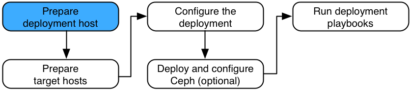

Prepare the deployment host#
The Rackspace Private Cloud Powered By OpenStack (RPCO) installation process requires one deployment host. The deployment host contains Ansible and orchestrates the RPCO installation on the target hosts. One of the target hosts, preferably one of the infrastructure hosts, can be used as the deployment host. To use a target host as a deployment host, follow the steps in Target hosts on the deployment host. This section assumes separate deployment and target hosts.
Note
The rpc-openstack repository includes additional features for Rackspace
Private Cloud. It integrates with the openstack-ansible set of
Ansible playbooks and roles. These additional features extend the
OpenStack environment, but they are not core to deploying an OpenStack
cloud.
Install the operating system#
Install the Ubuntu 16.04 LTS (Xenial Xerus) 64-bit operating system on the deployment host with at least one network interface configured to access the Internet or suitable local repositories.
Configure the operating system#
Install additional software packages and configure the network time protocol (NTP).
Update the source packages:
# apt-get updateUpgrade the system packages and kernel:
# apt-get -y dist-upgradeInstall additional software packages if they were not installed during the operating system installation:
# apt-get -y install aptitude build-essential git ntp ntpdate \ openssh-server python-dev sudo
Configure NTP to synchronize with a suitable time source.
Install the source and dependencies#
Install the source and dependencies for the deployment host by cloning
the rpc-openstack
repository into the /opt/rpc-openstack directory. Replace TAG
with the current stable release tag.
# git clone -b TAG --recursive https://github.com/rcbops/rpc-openstack \ /opt/rpc-openstack
Note
Pip and Ansible are installed when the deploy.sh deployment
script is run, and they do not need to be deployed manually at this
time. See Deployment playbooks.
Configure Secure Shell (SSH) keys#
Ansible uses Secure Shell (SSH) with public key authentication to connect the deployment and target hosts. To reduce user interaction during Ansible operations, key pairs should not include passphrases. However, if a passphrase is required, consider using the ssh-agent and ssh-add commands to temporarily store the passphrase before performing Ansible operations.